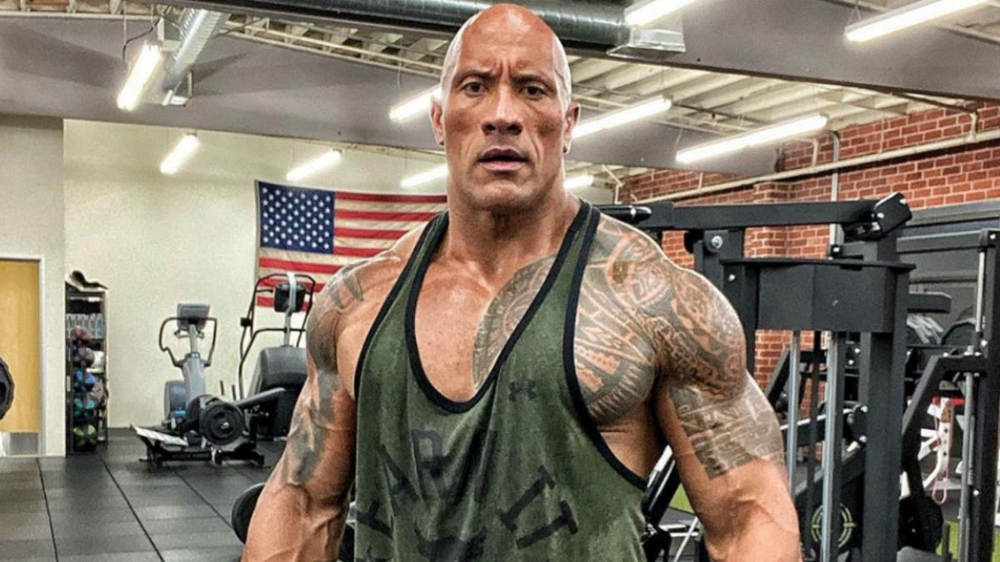

lucas ramiez molina
Dwayne Johnson nació el 2 de mayo de 1972 en Hayward, California, Estados Unidos. Hijo de Rocky Johnson, luchador profesional, y Ata Fitisemanu Maivia. Sus abuelos maternos también eran luchadores, su abuelo Peter Maivia fue Gran Jefe en Samoa. Fue criado por la familia de su madre en el suburbio de Grey Lynn en Auckland, Nueva Zelanda. Asistió a la Richmond Road, escuela de primaria. Viajó a Estados Unidos para unirse a sus padres. Más tarde estudió en la President William McKinley High School en Honolulu, Hawaii. Dado el trabajo de su padre, se mudaron a Bethlehem, Pensilvania, allí empezó a practicar fútbol americano en la Freedom High School.